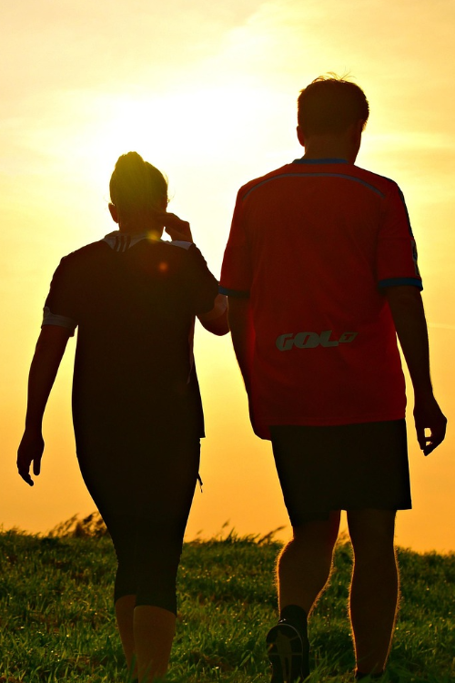
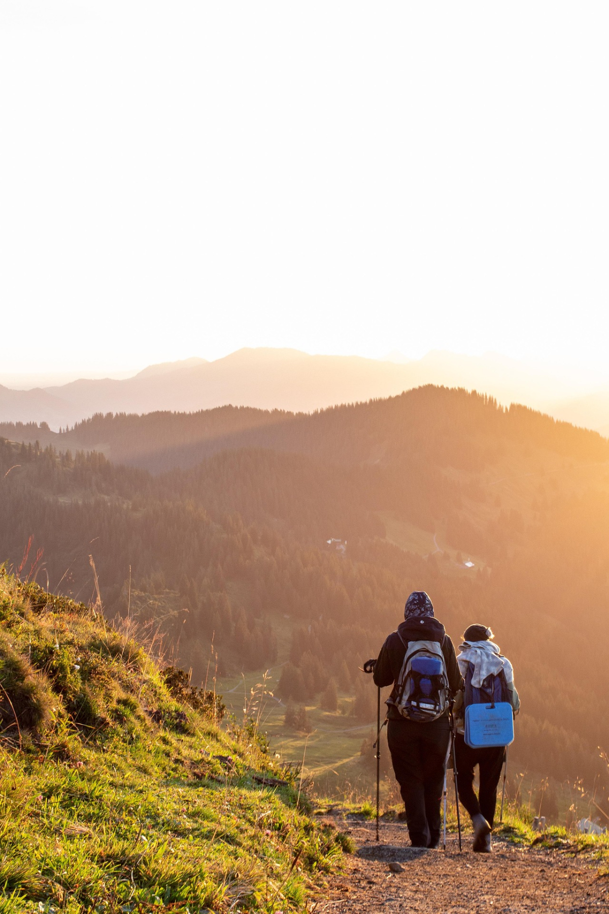
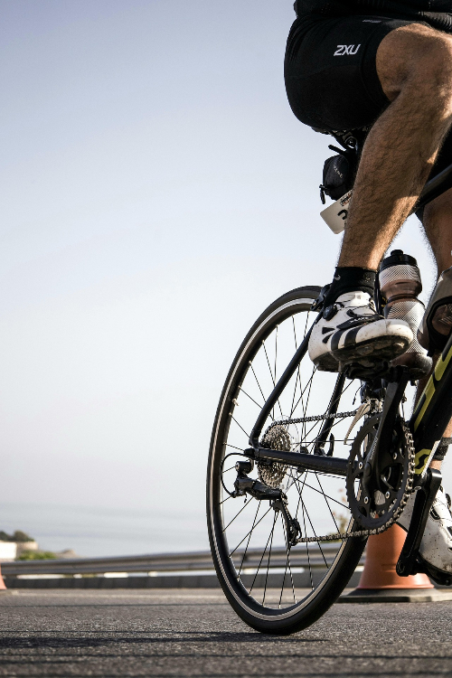

Cardio
Cardio is for improving heart health, increasing endurance, and boosting overall fitness. It enhances lung capacity, circulation, and stamina, helping you to perform everyday activities with more energy. Cardio also promotes fat loss, aids in weight management, and improves mood by releasing endorphins, reducing stress, and combating anxiety. Whether it's through running, cycling, or dancing, cardio exercises are essential for maintaining cardiovascular health, improving mental clarity, and keeping your body energized and strong.
Walking
Daily
30 min
Walking is the ultimate movement—simple, accessible, and powerful. It's the go-to choice for weight loss warriors, fitness beginners, and seasoned athletes alike. Every step burns calories, strengthens the body, and builds endurance without strain. But beyond the physical benefits, walking is a mental reset—a chance to clear your mind, spark creativity, and find balance in the rhythm of your stride. Whether it's a solo stroll, a social walk, or a determined push toward your goals, walking is a daily act of progress that anyone can embrace.
Hiking
Daily
30 min
Hiking is more than just exercise—it's an adventure that rewards you with stunning views, fresh air, and a deep connection to nature. Every step challenges your body, strengthening muscles, improving endurance, and enhancing balance. The journey itself clears the mind, reduces stress, and sparks a sense of accomplishment with every peak reached. Whether it's a peaceful forest trail or a rugged mountain climb, hiking offers the perfect blend of physical challenge and mental escape, leaving you refreshed, energized, and inspired.
Cycling
3-5 Times/Week
30 min
Cycling is more than just movement—it's freedom on two wheels. The thrill of the ride, the rush of the wind, and the ever-changing scenery make every journey an adventure. It builds endurance, strengthens muscles, and improves coordination while keeping your mind sharp and focused. Whether cruising through city streets or conquering open roads, cycling delivers a unique sense of speed, rhythm, and exploration. Every ride is a chance to push limits, embrace the journey, and feel the pure joy of motion.